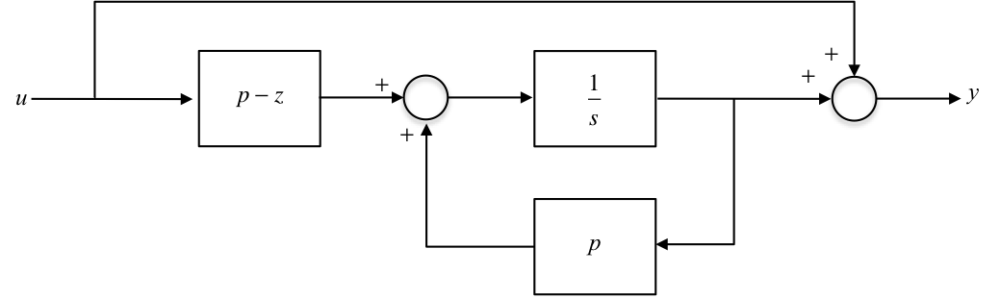

8.2. State-Feedback Control¶
One of the advantages of state space models is that it is possible to apply state feedback to place the closed loop poles into any desired positions.
8.2.1. State Space Design Methodology¶
Design control law to place closed loop poles where desired
If full state not available for feedback, then design an Observer to compute the states from the system output
Combine Observer and Controller – this takes the place of the Classical Compensator
Introduce the Reference Input – affects the closed loop zeros but not the poles making it possible to improve the transient response and tracking accuracy
8.2.2. State Feedback Compensator¶
8.2.3. This Section¶
Finding the control law
State feedback for controller canonical form
Transfer function model
Ackermann’s formula
Pole-selection for good design
8.2.3.1. Additional Materials¶
Not examined
Effect of state feedback on closed-loop zeros
Effect of plant zeros on the feedback gains
8.2.4. Finding the Control Law¶
We shall only consider SISO systems here.
Let the input to the plant, \(u\) be derived from the reference input \(r\), and the states, \(\mathbf{x}\), as follows:
Thus:
The state matrix for the closed loop system with input, \(r\), is: \(\mathbf{A}-\mathbf{BK}\).
Taking Laplace Transforms (ignoring initial conditions) gives:
Therefore
The closed loop poles are the roots of \(s\) in the Characteristic Equation (CE):
Suppose the desired closed loop poles are to be at \(p_1\), \(p_2\), \(\cdots\), \(p_n\), then the desired CE is:
Equation (2) is multiplied out to a polynomial in \(s\).
This leads to a set of linear equations in the \(k\)’s which can always be solved to give the required feedback control law, for whatever closed loop pole locations are given.
Finally, we need to find the \(k\) coefficients in \(\mathbf{K}\) such that the polynomials in equations (1) and (2) above have matching coefficients in each power of \(s\).
8.2.4.1. Example 1¶
Will be done in class.
Problem: Given,
find the feedback control law which places the closed-loop poles at: \(-10\pm j10\).
SOLUTION:
Now the desired CE is: $\(\alpha_c(s)=(s+10-j10)(s+10+j10) = 0\)$
Therefore matching coefficients in Eqs. (3) and (4):
Solving for the \(k\)’s:
Therefore the required feedback control law is:
COMMENT This matching of coefficients can always be done, though it is tedious for \(n>3\), EXCEPT in the case of the Control Canonical Form.
8.2.5. State Feedback in the Case of the Controller Canonical Form¶
In the control canonical form we have matrices:
with open loop CE:
Feedback results in the closed loop CE:
where:
therefore
Suppose the desired CE is:
Matching coefficients in Eqs. (5) and (6) is now simple:
8.2.5.1. Example 2¶
Solved in class
Problem: Given the system TF:
find the control law for the control canonical form which places the closed loop poles at \(s=−10\pm j10\).
SOLUTION: $\(G(s) = \frac{7}{(s+4)(s+11)} = \frac{7}{(s^2+15s+44)}\)$
The control canonical form has matrices:
NB: \(\mathbf{C}\) is obtained from the TF numerator \((0s+7)\). so:
and the closed loop CE is:
The desired CE is:
Comparing Eqs. (7) and (8) gives:
and
giving the control law as:
8.2.6. A Transfer Function Model of State Feedback¶
The last example had a system TF with no zeros. In this case it is easy to construct the equivalent classical controller. We had the feedback law:
so, taking Laplace transforms:
Now \(y=7x_2\) and \(\dot{x}_2=x_1\) therefore \(X_2(s)=Y(s)/7\) and \(X_1(s)=sX_2(s)=sY(s)/7\). Therefore
8.2.6.1. Transfer Function Model of State Feedback¶

Note: the DC gain is affected – this could be compensated for by introducing a gain term in series with input \(R\).
8.2.7. Ackermann’s Formula¶
8.2.7.1. State Feedback Design for any Form of State Space Model¶
As stated previously, the derivation of the feedback law is tedious for systems of order \(n>3\) except in the case of the controller canonical form.
One approach to the problem is to transform the given model to controller canonical form, derive the control law in terms of these states and then transform back to the original system.
Ackermann derived the following formula by this method.
8.2.7.2. The formula¶
State feedback: \(u=r-\mathbf{K}\mathbf{x}\) will place the closed loop poles at the roots of the desired CE:
where the row vector \(\mathbf{K}\) is given by Ackermann’s formula:
8.2.7.3. Explanation of the terms¶
\(\mathcal{C}\) is the controllability matrix (see Section 8.1):
and
8.2.7.4. Caveats¶
The system must be controllable for \(\mathcal{C}^{-1}\) to exist.
Ackermann’s formula is useful for SISO systems of order \(n\le 10\).
\(\mathcal{C}\) becomes numerically inaccurate for large \(n\).
8.2.7.5. MATLAB Function¶
From MATLAB CST, help acker: K = ACKER(A,B,P) calculates the feedback gain matrix \(\mathbf{K}\) such that the single input system
with a feedback law of \(u = -\mathbf{Kx}\) has closed loop poles at the values specified in vector \(\mathbf{P}\), i.e., P = eig(A-B*K).
Note: This algorithm uses Ackermann’s formula. This method is NOT numerically reliable and starts to break down rapidly for problems of order greater than 10, or for weakly controllable systems. A warning message is printed if the nonzero closed-loop poles are greater than 10% from the desired locations specified in \(\mathbf{P}\).
8.2.7.6. Example 3¶
For class
Problem: Given:
find the feedback vector \(\mathbf{K}\) to place the closed loop poles at \(s = -1,\ -1\) using Ackermann’s formula.
SOLUTION:
therefore
8.2.7.7. Solution in MATLAB¶
Using the formula
A = [1 2; -1 1]; B = [1; -2];
alpha_c = A * A + 2 * A + eye(2);
K = [0 1] * inv(ctrb(A, B)) * alpha_c
K =
0 -2
Using the function acker
% Example 3: alpha_c(s) = s^2 +2s + 1
P = [-1, -1]; % vector of desired pole locations
Ka = acker(A, B, P)
Ka =
0 -2
% Example 1
K = place([-4 0; 0, -11],[1;1],[-10+10i,-10-10i])
K =
19.4286 -14.4286
% Example 2
K = place([-15 -44;1 0],[1; 0],[-10+10i,-10-10i])
K =
5.0000 156.0000
8.2.8. Pole Selection for Good Design¶
Large control gains (large values in \(\mathbf{K}\)) are to be avoided since they result in high energy costs and require high power/bandwidth actuators.
A compromise must be achieved between good system response and control effort.
Sensible choices of poles may be obtained from standard tables which optimise the step response in some way.
e.g. The ITAE (Integral Time and Absolute Error) poles are designed to minimise,
These have overshoot. If this is really unacceptable (e.g. in machine tools) then Bessel polynomials can be used.
Order/Type |
ITAE |
Bessel |
|---|---|---|
1 |
$\(s+1\)$ |
$\(s+1\)$ |
2 |
$\(s^2+\sqrt{2}s+1\)$ |
$\(s^2+\sqrt{3}s+1\)$ |
3 |
$\(s^3+1.75s^2+2.15s+1\)$ |
$\(s^3+2.43s^2+2.47s+1\)$ |
etc |
etc |
etc |
The above are normalised to give \(\omega_n=1\) rad/s. To obtain polynomials for \(\omega_n\ne 1\), replace \(s\) in the above with \(s/\omega_n\).
E.g. if \(\omega_n=5\) rad/s, the \(2^\mathrm{nd}\) order ITAE polynomial is: \(s^2+5\sqrt{2}s+25\).
8.2.8.1. Comments¶
In general the Bessel polynomials have too much damping for normal applications — it is preferable to use ITAE (or Butterworth) poles if some overshoot is acceptable.
If zeros are present they tend to “sharpen up” the transient response (faster rise times but consequently with more overshoot). In such cases it may be desirable to place a closed loop pole on top of a troublesome zero and work with the reduced order system as above.
The poles closest to the origin matter most; other poles give rise to shorter-term transients only and may need only to be shifted to a better damped location, if necessary, at a similar frequency (distance from the origin).
A most effective technique is to use optimal control to achieve a compromise between control effort, \(u\), and error, \(e\). i.e. Find the feedback vector \(\mathbf{K}\) such as to minimise,
where the choice of the parameter \(k\) determines the required compromise between,
High Accuracy for High Control Effort (use a large value for \(k\))
Lower Accuracy for Reduced Control Effort (use a smaller value for \(k\))
8.2.9. End of Pre-Class Presentation¶
8.2.10. Effect of State Feedback on the Closed Loop Zeros¶
Since,
then the closed-loop system is:
By analogy with previous work (see Some Important Properties, in Section 7.2), the TF from reference input \(r\) to output \(y\) is:
The closed loop TF zeros are determined by the numerator determinant.
Adding \(\mathbf{K}\) times the \(2^\mathrm{nd}\) column to the first cancels terms whilst leaving the determinant unchanged.
The new form for the TF is:
Notice now that numerator is identical to that of the open loop TF. This implies that the state feedback control has left the open loop zeros unchanged. The different denominator is due to the feedback action which alters the pole positions as required.
8.2.11. Effect of Zero Locations on the Feedback Gains¶
When a zero is close to a pole in the TF there is a marked increase in the feedback gains. This effect is best illustrated with an example.
Given a system with a TF,
find the control law to move the pole to \(p_c\).
Using the observer canonical form,
Design the feedback to move the closed-loop pole to \(p_c\). Now,
Desired CE polynomial: \(\alpha_c(s)=s-p_c\). Actual CE polynomial: \(\det(s\mathbf{I}-\mathbf{A}-\mathbf{BK}) = s - p + (p - z)k_1.\)
Comparing the constant:
Notice that the feedback gain \(k_{1}\) is large if:
the zero is close to the pole: \(z\approx p\)
the closed loop pole \(p_c\) is far from \(p\)
8.2.11.1. Effect of Zero Locations on the Feedback Gains¶
Large feedback control gains are required if:
There exist almost cancelling pole-zero pairs in the open loop TF, making the system almost uncontrollable.

(Notice that in this condition the input \(u\) is almost disconnected from the integrator for the state.)
One tries to move the poles a long way, (\(|p-p_c|\) large).
This imposes a practical limit on how arbitrarily the poles can be placed. You ca nnot make a slow system fast without using large gains requiring powerful, expensive actuators to force the plant response. Indeed, excessively large forces may destroy the plant.
8.2.12. Summary¶
Finding the control law
State feedback for controller canonical form
Transfer function model
Ackermann’s formula
Pole-selection for good design
Effect of state feedback on closed-loop zeros
Effect of plant zeros on the feedback gains